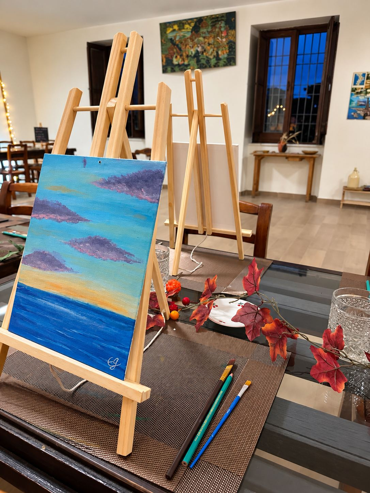
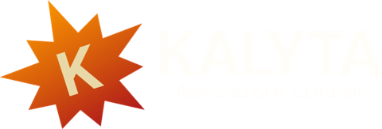
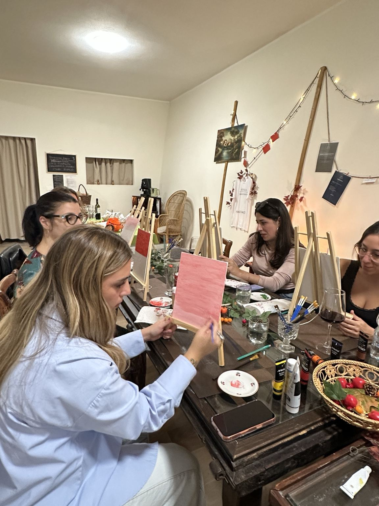
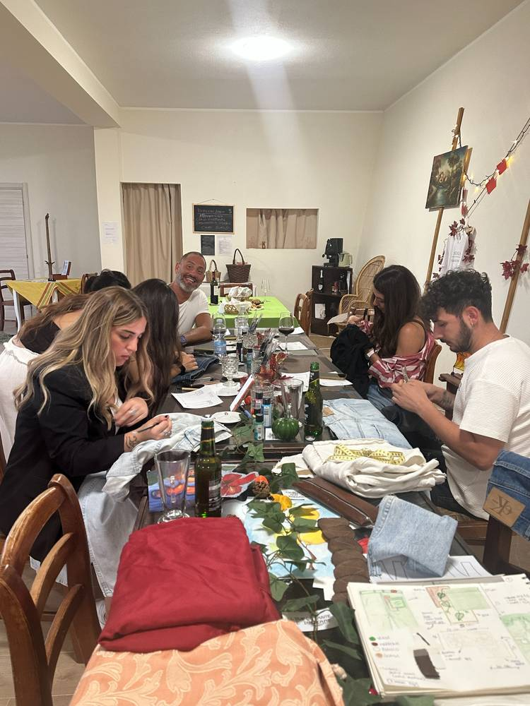
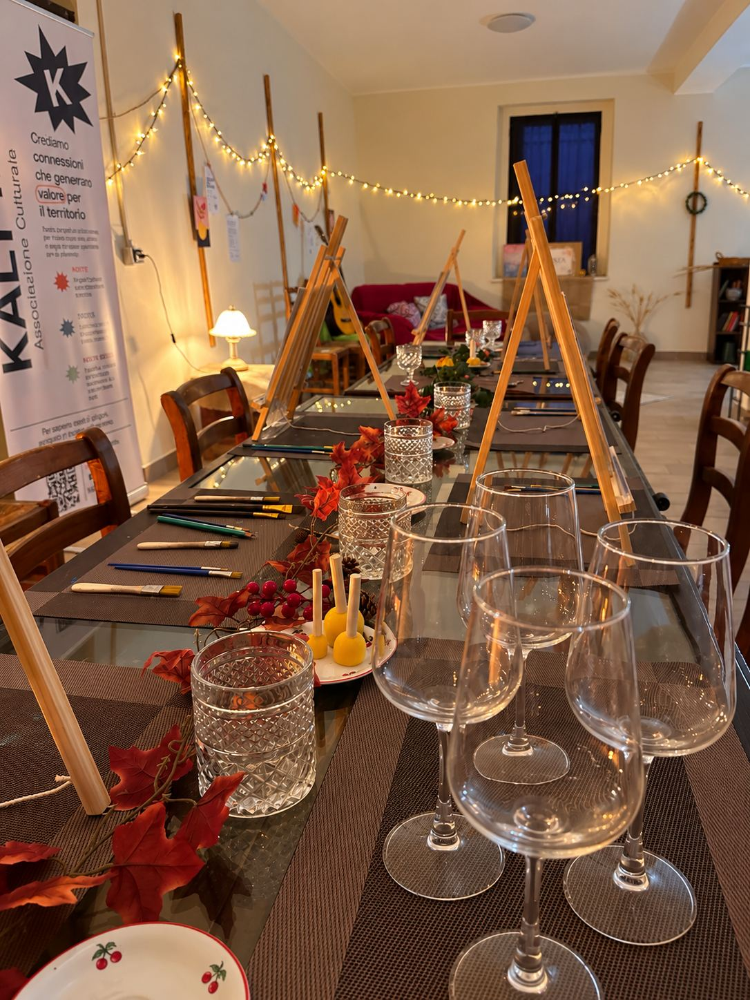
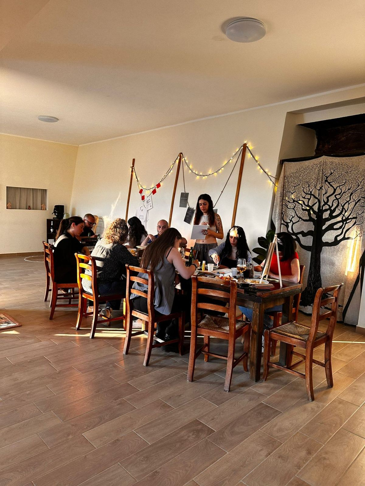
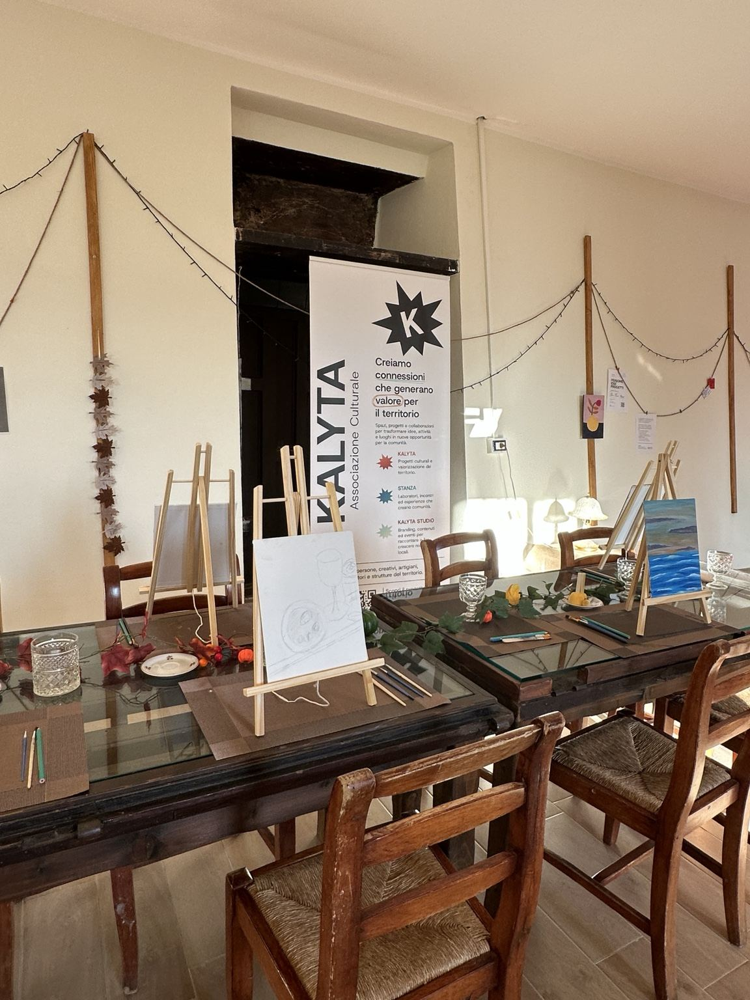

Pittura creativa
Colori, tele e un tavolo condiviso. Non serve saper dipingere.

KALYTA PRIVATE · ESPERIENZE PER GRUPPI
I laboratori Kalyta possono diventare esperienze dedicate al vostro gruppo, anche fuori dalle date in calendario.
Un compleanno, una serata tra amici o semplicemente qualche ora da passare facendo qualcosa insieme.
Raccontaci cosa avete in mente ↓
UNA DATA PER VOI
Se siete già un gruppo, possiamo costruire una data dedicata. Scegliamo l’esperienza e il momento. Kalyta prepara quello che serve.
Voi arrivate. Il tavolo è pronto.
LE ESPERIENZE

Colori, tele e un tavolo condiviso. Non serve saper dipingere.
Un progetto semplice da costruire insieme, anche partendo da zero.


Cere, profumi e forme. Si parte dai materiali e si realizza qualcosa da portare con sé.
E ALTRE ESPERIENZE KALYTA
Le proposte possono cambiare. Raccontateci cosa vi piacerebbe fare e vediamo cosa possiamo costruire.
Scopri cosa possiamo organizzare →
A volte basta avere le persone giuste.
PERCHÉ FARLO
Per un compleanno.
Per stare insieme.
Per un addio al nubilato.
Per rivedersi.
Per fare qualcosa di diverso.
Anche senza un motivo preciso.
STANZA · ISOLA DI CAPO RIZZUTO
STANZA è lo spazio creativo e culturale di Kalyta a Isola di Capo Rizzuto. Intorno al suo grande tavolo possiamo preparare alcune delle esperienze dedicate ai gruppi.

COME FUNZIONA
Ci dite in quanti siete.
Ci raccontate cosa avete in mente.
Scegliamo insieme cosa fare.
Troviamo il momento giusto.
Al resto pensa Kalyta.
RACCONTATECELO
Non dovete avere già deciso tutto. Lasciateci qualche informazione: vi ricontattiamo per capire insieme disponibilità e possibilità.